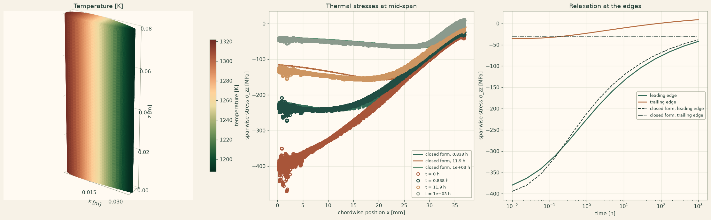
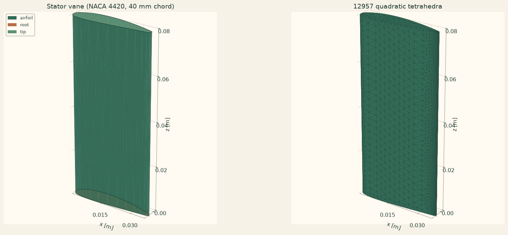

Docs › Examples › Creep relaxation of thermal stresses in a turbine stator vane
Creep · 3D
Creep relaxation of thermal stresses in a turbine stator vane
A nickel-alloy stator vane, heated more at the leading edge than at the trailing edge and held by the shrouds, relaxes its thermal stresses by creep over 1000 hours.
Run locally with OneSimulation. The example downloads are free. Running them requires an activated runtime. Runtime Alpha 0.2.1a8 · CPython 3.13 on macOS (Apple Silicon), Ubuntu 22.04 (x86-64), and Windows x64. Installation and activation · View pilot plans. Scope of the reference checks.


What it computes
OneSimulation reads the vane from a STEP file, solves 3D steady heat conduction with convection to a gas whose temperature varies along the chord, and hands the temperature field to Norton creep with an Arrhenius factor and thermal expansion at every quadrature point of a 3D small-strain solid, all points updated in one vectorized call per iteration. The script that builds the STEP file comes with the notebook.
What it checks
The net heat flux imbalance is 2.1e-11 W. At mid-span the elastic spanwise stress matches the generalized plane-strain bar E(ε_zz - αΔT) within 2.8 % with in-plane stresses below 5 %, and every point relaxes like a restrained Norton bar at its own temperature within 6 % rms (11 % at most, where the spanwise strain redistributes by 3.5e-4 while the hot region relaxes).
Geometry
The notebook starts at the import of the CAD file turbine_stator_blade_creep.step: STEP (AP242), readable by any CAD program, with the names of the faces that the boundary conditions use. Put it next to the notebook.


The geometry script
The script turbine_stator_blade_creep_geometry.py builds the geometry with the CAD objects of OneSimulation and writes the file. Change a dimension there, run it, and run the notebook again.
"""Geometry of the OneSimulation example "Creep relaxation of thermal stresses in a turbine stator vane".
Builds the airfoil of a stator vane (NACA 4420 section, 40 mm chord, leading edge at x = 0, with a
semicircular trailing edge at 90 % chord) extruded
over a span of 80 mm along z with the CAD objects of OneSimulation and writes
turbine_stator_blade_creep.step. The faces are named bottom (root, z = 0), top (tip, z = 80 mm)
and side (the airfoil surface).
"""
import numpy as np
from onesim.cad.d2 import Profile
from onesim.cad.d3 import Prism
chord, span, camber, position, thickness = 0.040, 0.080, 0.04, 0.4, 0.20
beta = np.linspace(0.0, np.pi, 13)
x = 0.9 * 0.5 * (1 - np.cos(beta))
half = 5 * thickness * (0.2969 * np.sqrt(x) - 0.1260 * x - 0.3516 * x**2 + 0.2843 * x**3 - 0.1036 * x**4)
mean = np.where(x < position, camber / position**2 * (2 * position * x - x**2), camber / (1 - position) ** 2 * (1 - 2 * position + 2 * position * x - x**2))
slope = np.arctan(np.where(x < position, 2 * camber / position**2 * (position - x), 2 * camber / (1 - position) ** 2 * (position - x)))
upper = np.column_stack((x - half * np.sin(slope), mean + half * np.cos(slope)))
lower = np.column_stack((x + half * np.sin(slope), mean - half * np.cos(slope)))
arc = slope[-1] + np.linspace(-0.5 * np.pi, 0.5 * np.pi, 5)[1:-1]
tail = np.column_stack((x[-1] + half[-1] * np.cos(arc), mean[-1] + half[-1] * np.sin(arc)))
outline = chord * np.vstack((upper[::-1][:-1], lower[1:], tail))
vane = Prism(profile=Profile.spline(outline), height=span)
vane.save("turbine_stator_blade_creep.step")The notebook
The complete notebook, cell by cell. Run it to produce the figures and the comparison printout.
Stator vanes guide the hot gas onto the rotor of a gas turbine. Their metal runs at 1100 to 1300 K, where nickel alloys creep: the creep rate follows Norton's law with an Arrhenius factor,
and grows by a factor of ten for some 50 K. The vane is held at both ends by the inner and outer shrouds, so its uneven thermal expansion is restrained and causes stresses, which creep then relaxes, hot zones first.
Setup. Airfoil of NACA 4420 section, chord 40 mm (semicircular trailing edge at 90 % chord), span 80 mm. Hot gas around the vane with a temperature of 1350 K at the leading edge falling linearly to 1150 K at the trailing edge, heat transfer coefficient 1500 W/(m² K); the end faces are insulated. Metal: \(k=20\) W/(m K), \(E=200\) GPa, \(\nu=0.3\), \(\alpha=14\cdot10^{-6}\) 1/K (stress-free at 293 K), Norton creep \(n=5\), \(A=10^{-50}\) Pa\(^{-5}\)s\(^{-1}\) at \(T_r=1200\) K, \(Q=300\) kJ/mol. The shrouds, at 1200 K, hold the end faces: the root does not move in its plane, the tip moves with the free thermal expansion of a 1200 K vane along the span and freely in its plane. The vane comes from the CAD file turbine_stator_blade_creep.step, written by turbine_stator_blade_creep_geometry.py with the CAD objects of OneSimulation.
| face | heat | mechanics |
|---|---|---|
side (airfoil) | convection to the gas | free |
bottom (root) | insulated | all displacements 0 |
top (tip) | insulated | \(u_z=\alpha\,(1200\,\text{K}-293\,\text{K})\,L\) |
Checks. (1) Steady conduction without sources makes the temperature harmonic and, with insulated ends, independent of \(z\). In plane strain such a field causes no in-plane stresses in a simply connected section with a free contour; the spanwise strain is uniform over the section and every fibre is a restrained bar, \(\sigma_{zz}=E(\varepsilon_{zz}-\alpha\,\Delta T)\) (away from the root, where the in-plane clamp acts). (2) The heat taken up from the gas balances the heat given back. (3) Each point then relaxes like a restrained bar at constant temperature, \(\sigma(t)=\sigma_0\left[1+(n-1)\,E\,A f(T)\,|\sigma_0|^{n-1}t\right]^{-1/(n-1)}\).
import numpy as np
from onesim.cad.exchange import load
from onesim.materials import IsotropicSolid
from onesim.materials.solids import CreepMaterialPoint, PowerLawCreep
from onesim.meshing import TetrahedralMesher
from onesim.numerics import Numerics
from onesim.numerics.fem import FiniteElement, Lagrange
from onesim.numerics.linear import SparseDirect
from onesim.physics.heat_transfer import ConvectiveHeatFlux, HeatConduction, HeatFlux
from onesim.physics.solid_mechanics import SmallStrainSolid
from onesim.simulation import Problem, Simulation
from onesim.visualization import plots, theme
theme.set()Geometry and mesh
Quadratic tetrahedra of 3 mm (refined by the mesher at the leading and trailing edge).
vane = load("turbine_stator_blade_creep.step")
faces = vane.boundaries
mesh = TetrahedralMesher(target_size=0.003).generate(vane)
view = plots.Camera(elevation=25, azimuth=-55)
fig = plots.figure(1, 2, size=(15, 6))
plots.geometry(vane, selection={"airfoil": faces.side, "root": faces.bottom, "tip": faces.top}, labels=False, camera=view,
title="Stator vane (NACA 4420, 40 mm chord)", ax=fig[0])
plots.mesh(mesh, groups=("all",), legend=False, camera=view, title=f"{mesh.cell_count} quadratic tetrahedra", ax=fig[1])
plots.show()Steady temperature field
chord, span, shroud, reference = 0.040, 0.080, 1200.0, 293.15
alloy = IsotropicSolid(density=8200.0, specific_heat_capacity=500.0, thermal_conductivity=20.0, youngs_modulus=200e9,
poisson_ratio=0.3, thermal_expansion_coefficient=14e-6)
heat = HeatConduction(domain=vane.volume, material=alloy)
gas = lambda x, y, z: 1350.0 - 200.0 * np.clip(x / chord, 0.0, 1.0)
thermal = Simulation(problem=Problem(name="Vane in hot gas", geometry=vane, physics=(heat,), boundary_conditions=(
ConvectiveHeatFlux(boundary=faces.side, physics=heat, heat_transfer_coefficient=1500.0, ambient_temperature=gas),
HeatFlux(boundary=faces.bottom | faces.top, physics=heat, value=0.0))),
mesh=mesh, numerics=Numerics(spatial=FiniteElement(element=Lagrange(order=2)), linear_solver=SparseDirect())).solve_stationary()
temperature = thermal.field(heat.temperature)
flux = temperature.boundary_flux(faces.side)
section = np.column_stack((np.linspace(0.002, 0.034, 9), np.full(9, 0.001), np.full(9, 0.5 * span)))
print(f"net heat flow through the airfoil surface {flux:.3e} W (balance of gain and loss; heat flux scale "
f"{1500.0 * 100.0 * chord * span:.1f} W for 100 K over the surface)")
print(f"temperature from 2 to 34 mm chord at mid-span: {np.round(temperature.evaluate(section, tolerance=0.004), 1)} K")
spanwise = temperature.evaluate(np.column_stack((np.full(3, 0.010), np.full(3, 0.002), np.array([0.01, 0.04, 0.07]))), tolerance=0.004)
print(f"at 10 mm chord the temperature varies along the span by {np.ptp(spanwise):.2e} K")Creep of the vane over 1000 hours
CreepMaterialPoint with the Arrhenius Norton law and thermal expansion from the temperature field (time_interpolant() of the stationary field); all quadrature points (27 per tetrahedron, order 3) are updated in one call per iteration. The creep strains stay of the order of the thermal strain mismatch, so the quadratic elements need no locking treatment here.
hour = 3600.0
law = PowerLawCreep(coefficient=1e-50, stress_exponent=5.0, activation_energy=300e3, reference_temperature=1200.0)
metal = CreepMaterialPoint(laws=(law,), temperature=temperature.time_interpolant(), thermal_expansion=14e-6, reference_temperature=reference)
times = np.r_[0.0, np.geomspace(0.01, 1000.0, 14)] * hour
supports = ((faces.bottom, "x", 0.0), (faces.bottom, "y", 0.0), (faces.bottom, "z", 0.0), (faces.top, "z", 14e-6 * (shroud - reference) * span))
result = SmallStrainSolid(youngs_modulus=200e9, poisson_ratio=0.3, kinematics="volume", material_point=metal).solve(
mesh=mesh, times=times, order=2, quadrature_order=3, displacements=supports)
points = result.quadrature_coordinates
local_temperature = np.array([metal.temperature(point, 0.0) for point in points])
creep = np.array([[p.equivalent_creep_strain for cell in history for p in cell] for history in result.material_history])Elastic start against generalized plane strain
Quadrature points between 40 and 75 mm span, away from the root whose clamp holds the section in its plane. There the spanwise strain is uniform over the section and the in-plane stresses vanish, so every point is a restrained bar: \(\sigma_{zz}=E\,(\varepsilon_{zz}-\alpha(T-293\,\text{K}))\).
central = np.flatnonzero((points[:, 2] > 0.040) & (points[:, 2] < 0.075))
initial = result.stress[0]
spanwise_strain = result.strain[:, central, 2, 2]
bar = 200e9 * (spanwise_strain[0] - 14e-6 * (local_temperature[central] - reference))
scale = np.abs(initial[central, 2, 2]).max()
print(f"t = 0: spanwise strain {spanwise_strain[0].mean():.6f} ± {spanwise_strain[0].std():.1e} over the section "
f"(free expansion of the shrouds {14e-6 * (shroud - reference):.6f}; the clamped root takes a share)")
print(f"t = 0: spanwise stress within {100 * np.abs(initial[central, 2, 2] - bar).max() / scale:.2f} % of E(ε_zz - αΔT) "
f"(largest |σ_zz| {scale / 1e6:.0f} MPa); largest in-plane stress {100 * np.abs(initial[central][:, :2, :2]).max() / scale:.2f} % of it")Relaxation against the uniaxial closed form
The closed form starts from the computed elastic spanwise stress of each point, holds its total strain and uses its own temperature.
factor = np.exp(-300e3 / 8.314462618 * (1 / local_temperature - 1 / 1200.0))
closed = lambda t: initial[:, 2, 2] * (1 + 4 * 200e9 * 1e-50 * factor * np.abs(initial[:, 2, 2]) ** 4 * t) ** -0.25
for hours in (1.0, 10.0, 100.0, 1000.0):
k = int(np.argmin(np.abs(times - hours * hour)))
deviation = np.abs(result.stress[k][central, 2, 2] - closed(times[k])[central])
print(f"t = {times[k] / hour:7.1f} h: spanwise stress within {100 * deviation.max() / scale:.2f} % (rms {100 * np.sqrt(np.mean(deviation**2)) / scale:.2f} %) "
f"of the uniaxial relaxation; largest |σ_zz| {np.abs(result.stress[k][central, 2, 2]).max() / 1e6:6.1f} MPa, largest creep strain "
f"{100 * creep[k][central].max():.3f} %, change of the spanwise strain {np.abs(spanwise_strain[k] - spanwise_strain[0]).max():.1e}")Figures
Left the temperature on the vane surface; middle the spanwise stress at mid-span across the chord at several times with the closed form; right the history at the leading and the trailing edge.
leading = central[np.argmin(points[central, 0])]
trailing = central[np.argmax(points[central, 0])]
show = [0, int(np.argmin(np.abs(times - hour))), int(np.argmin(np.abs(times - 10 * hour))), len(times) - 1]
fig = plots.figure(1, 3, size=(20, 6))
plots.surface(temperature, camera=view, title="Temperature [K]", ax=fig[0])
plots.line(points={f"t = {times[k] / hour:.3g} h": (1e3 * points[central, 0], result.stress[k][central, 2, 2] / 1e6) for k in show},
y={f"closed form, {times[k] / hour:.3g} h": (1e3 * np.sort(points[central, 0]), closed(times[k])[central][np.argsort(points[central, 0])] / 1e6) for k in show[1:]},
xlabel="chordwise position x [mm]", ylabel="spanwise stress σ_zz [MPa]", title="Thermal stresses at mid-span", legend="lower right", ax=fig[1])
plots.line(y={"leading edge": (times[1:] / hour, result.stress[1:, leading, 2, 2] / 1e6), "trailing edge": (times[1:] / hour, result.stress[1:, trailing, 2, 2] / 1e6)},
reference={"closed form, leading edge": (times[1:] / hour, np.array([closed(t)[leading] for t in times[1:]]) / 1e6),
"closed form, trailing edge": (times[1:] / hour, np.array([closed(t)[trailing] for t in times[1:]]) / 1e6)},
scale="logx", xlabel="time [h]", ylabel="spanwise stress σ_zz [MPa]", title="Relaxation at the edges", legend="center right", ax=fig[2])
plots.show()Going further
Add the gas pressure on the airfoil as a traction and watch the primary stresses that creep cannot relax; switch to a Norton-Bailey law with primary creep (time_exponent); or cool the vane from inside with a channel and a second convective boundary.